Stratagems
Called in with the real arrow codes, real call-in times and cooldowns: Eagles, orbitals, sentries, backpacks, support weapons, Guard Dogs and the Hellbomb.
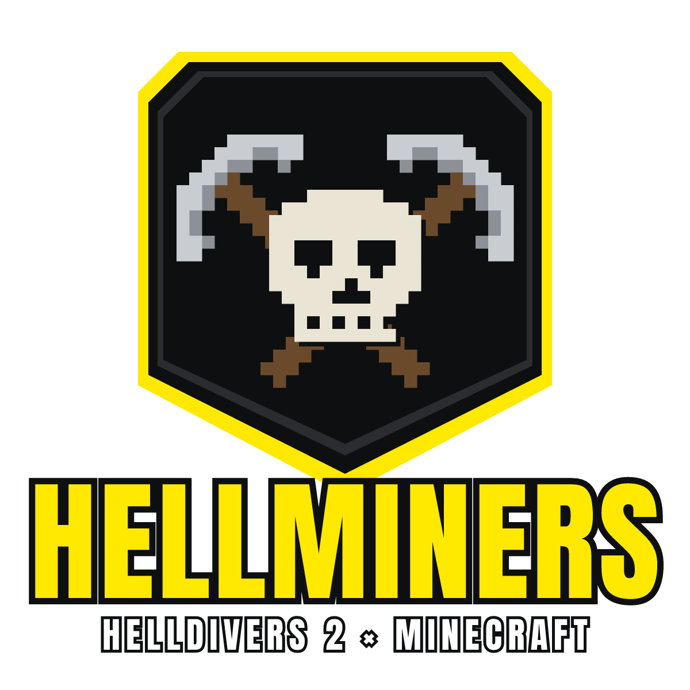
Stratagems, Terminids, Automatons, Eagles, orbitals and Hellbombs, rebuilt from the original game and dropped into your Minecraft world.
Not available yet. The mod is in early development. It will be released for free on Java Edition once it has all the necessary features.
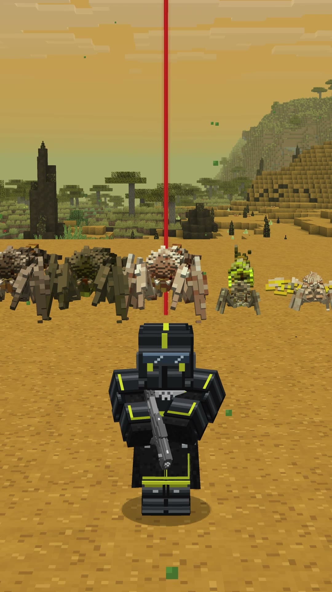
Called in with the real arrow codes, real call-in times and cooldowns: Eagles, orbitals, sentries, backpacks, support weapons, Guard Dogs and the Hellbomb.
From Scavengers to Bile Titans and Dragonroaches, at the same size as in the game, with hit zones built from the models.
Troopers, Raiders, Marauders, Brawlers and Commissars, built from the game's own meshes and animations.
The full B-01 Tactical set, with the cape in its own slot, plus the Liberator, Peacemaker and grenades.
Terminid territory spawns in the overworld, with nests and patrols to clear and samples to collect.
SEAF Artillery, a SAM Site and radar to bring online, plus missions on their own planet.
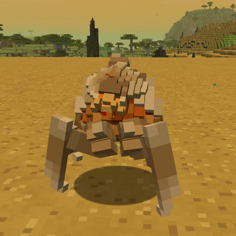
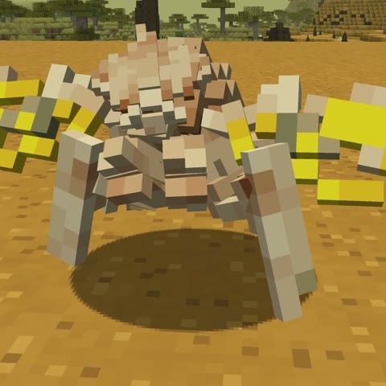
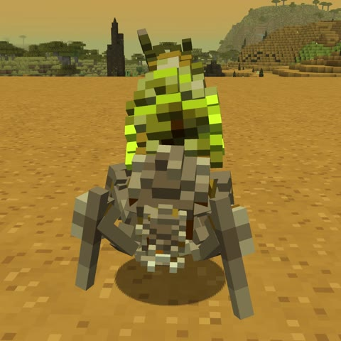
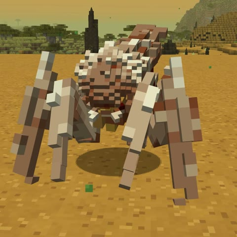
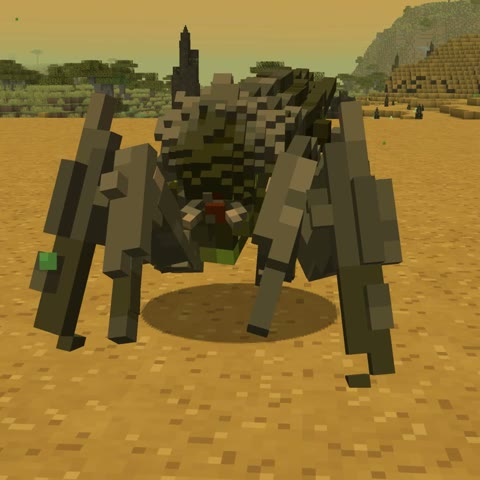
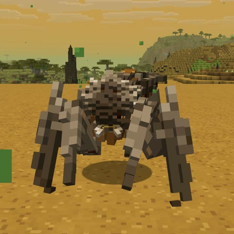
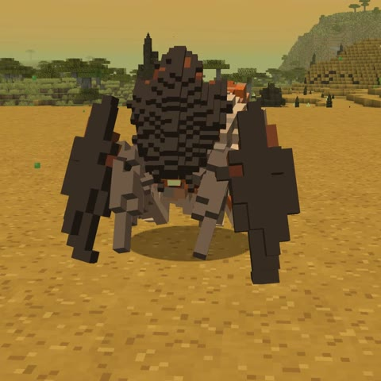
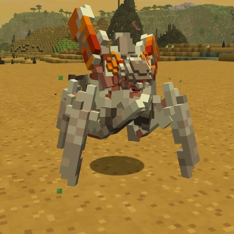
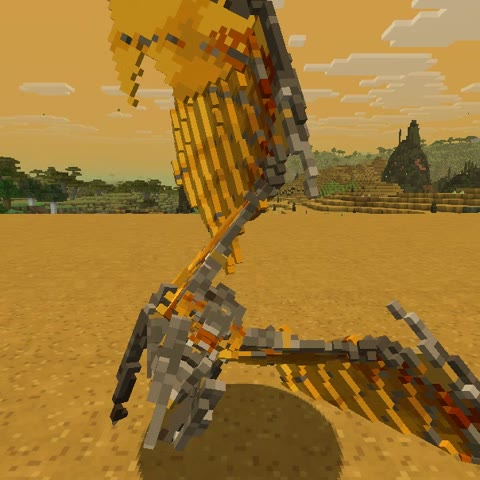
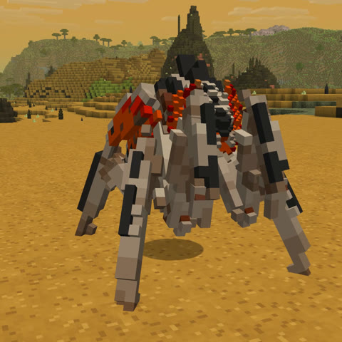
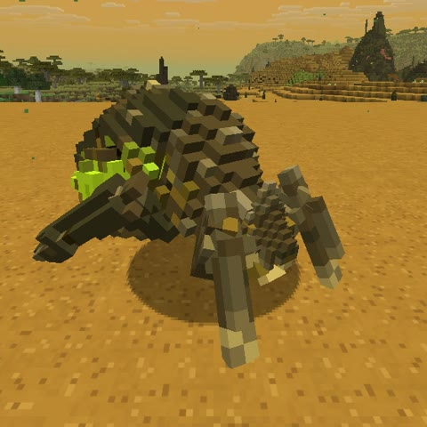
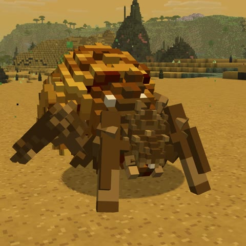
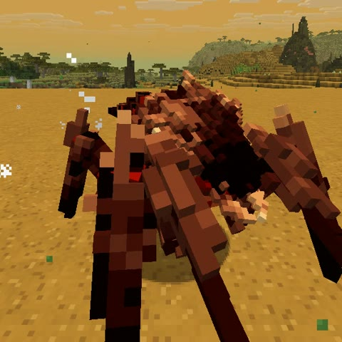
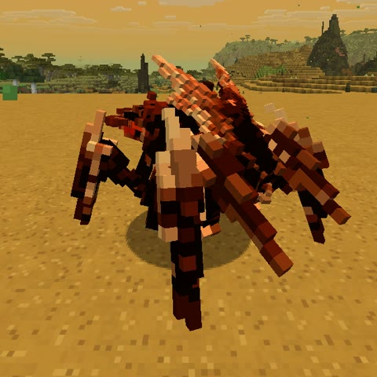
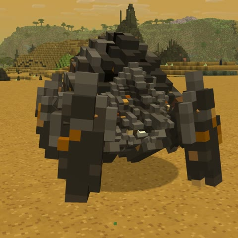
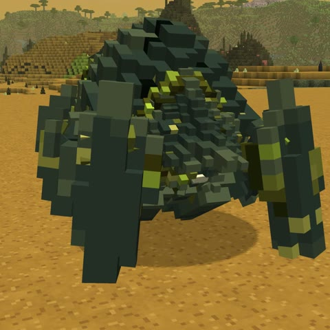
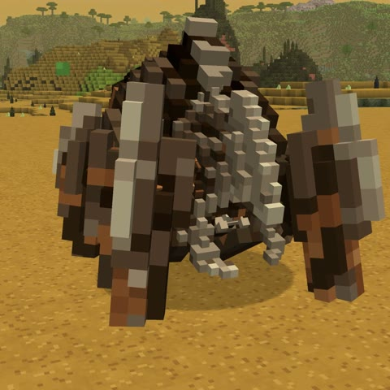
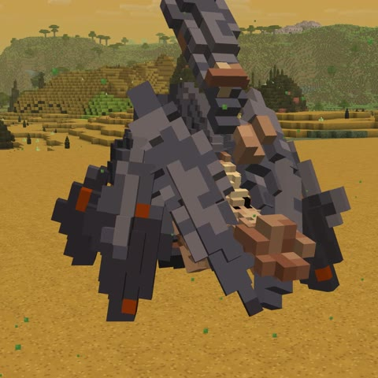
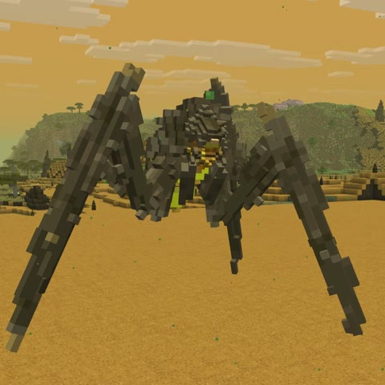
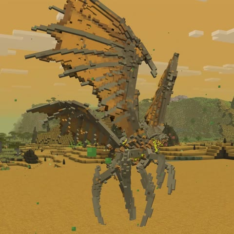
Hellminers is a passion project and the full release will be free for everyone. If you'd like to support me, you can buy me a coffee on Ko-fi. It's completely optional, and it means a lot.
Patreon is coming later: a look behind the scenes at how the mod is made, and early versions of it.